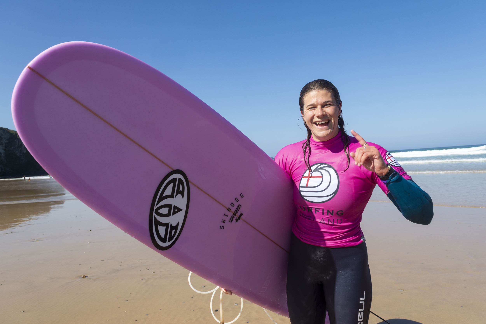
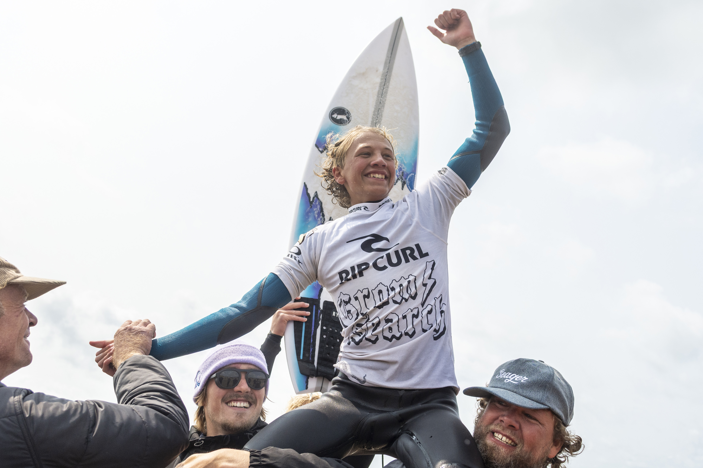
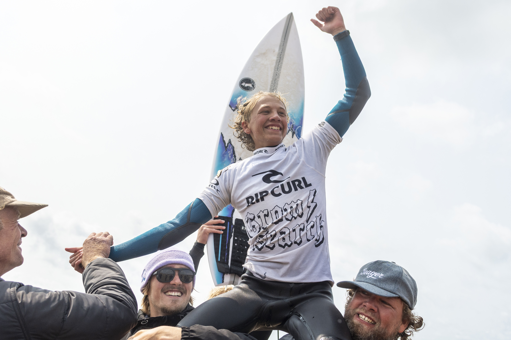
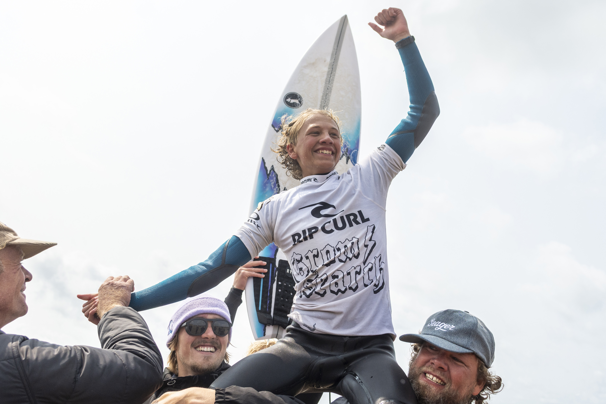
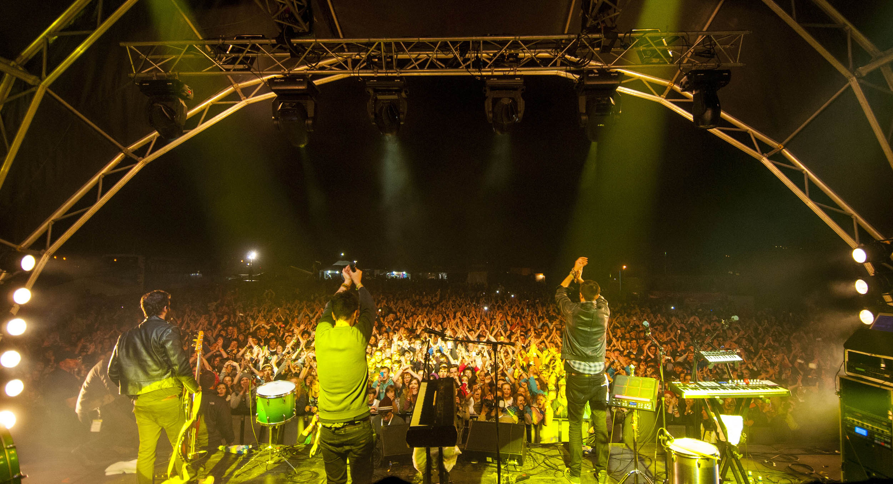
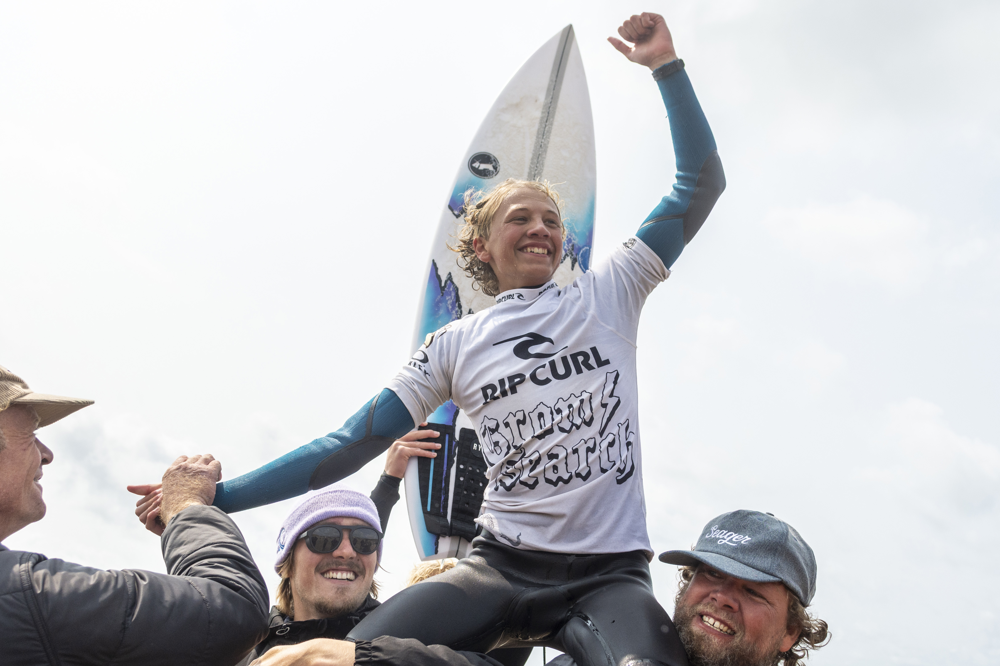

Portfolio
Surf & Ocean

 


Press & Events


Surf, Press, and Event Photography — Visual storytelling from North Devon and beyond.
Rob Tibbles is an established photographer and journalist with almost a quarter of a century’s experience documenting surf culture, community life, and events across North Devon and beyond.
Best known for his powerful surf photography and reportage, Rob’s work fuses artistry with the instinct of a photojournalist — producing compelling images that have featured in both national and international publications.
Over the years, Rob has played an active role in the surf community through media, mentoring, and activism — championing environmental awareness, sustainable coastal living, and the spirit of British surf culture.
Alongside his editorial and press photography, Rob also manages media teams and provides event photography that blends professionalism with creative storytelling.

For assignments, commissions, or collaboration enquiries:
Email: info@robtibbles.com
Follow on Instagram: @robtibblesphoto